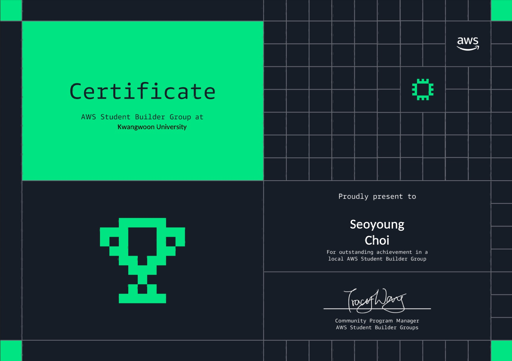
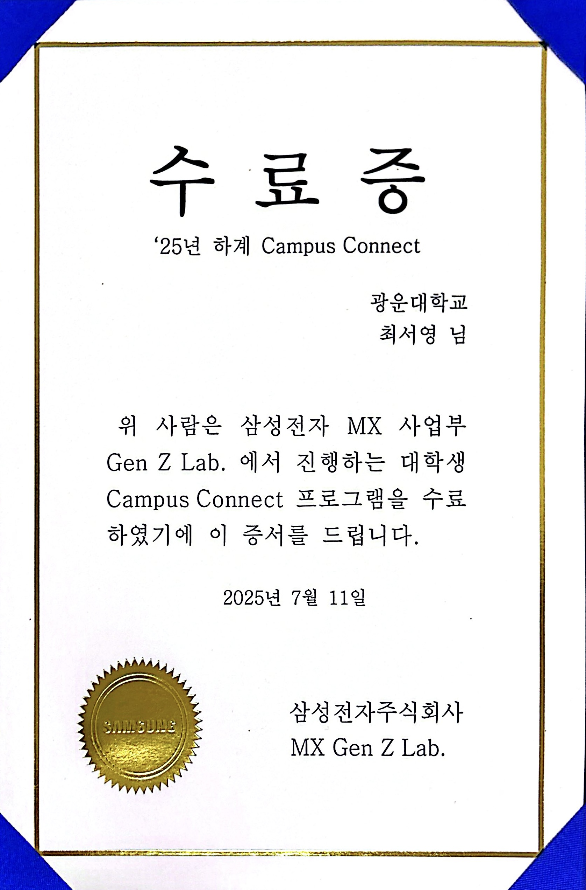
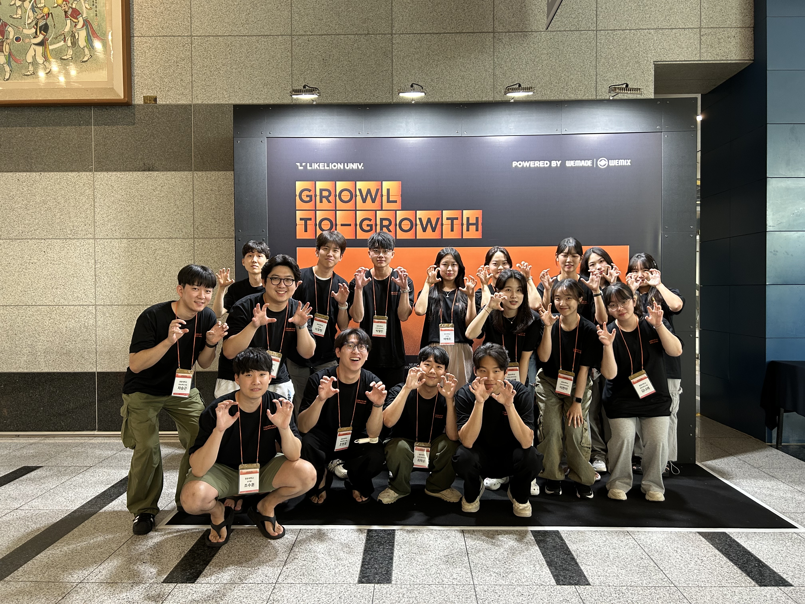
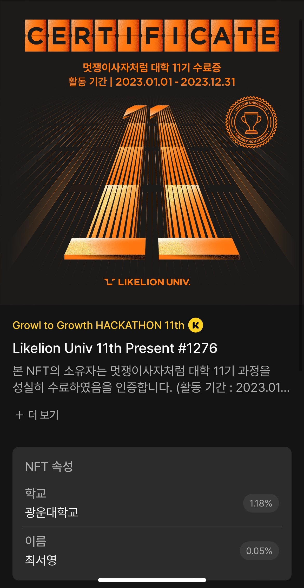
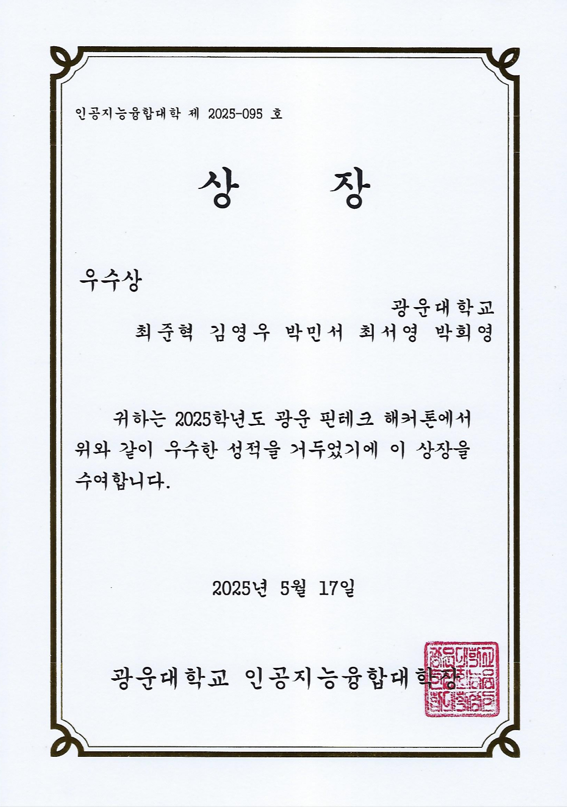
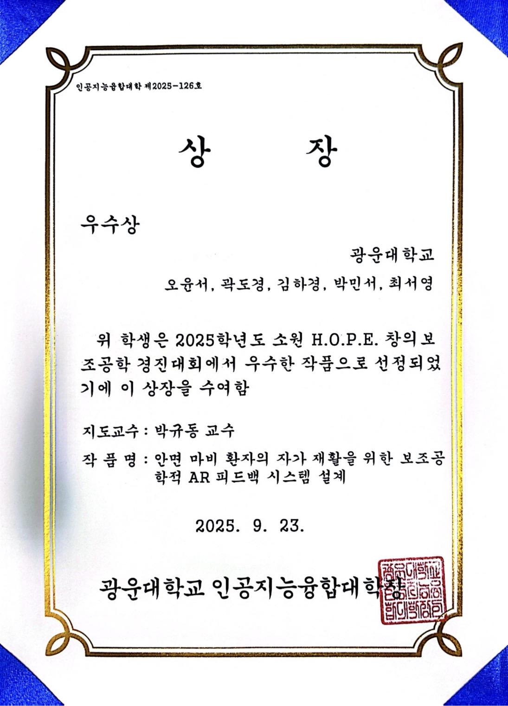
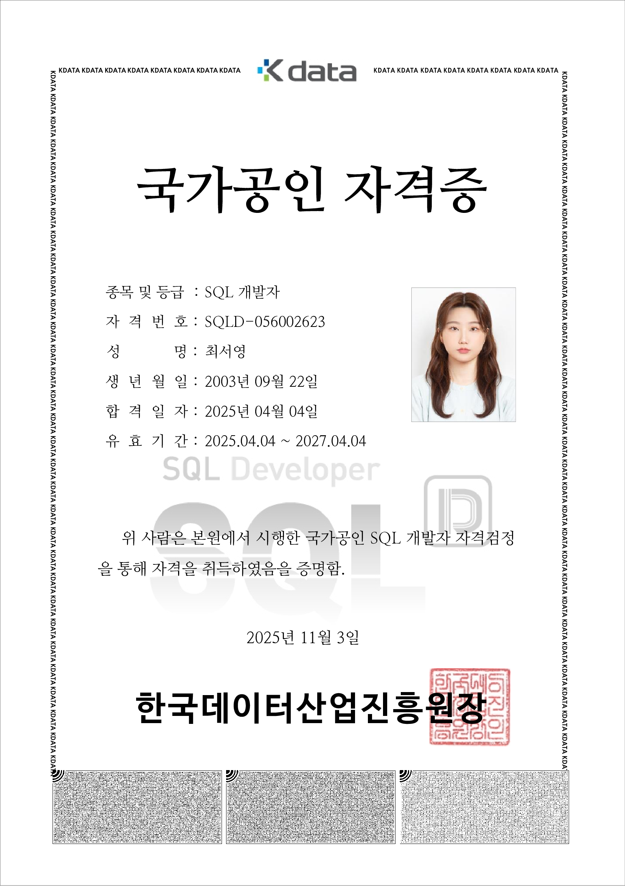

Completed

Hi! I'm CHOI SEOYOUNG
역할을 드래그하거나 눌러 주세요
인간 중심의 AI 시스템을 실현하는 데이터 사이언티스트입니다


AWS 기반 클라우드 아키텍처와 생성형 AI 기술을 학습하며 팀 프로젝트와 스터디 활동을 진행했습니다. 특히 Amazon Bedrock을 활용한 생성형 AI 프로젝트를 수행하며 RAG, 서버 구조 설계, 서비스 아키텍처 구성 등 실제 서비스 환경을 고려한 기술을 경험했습니다. 또한 ACC 자격증 소모임에 참여하여 AWS 핵심 서비스와 클라우드 기초 지식을 꾸준히 학습하며 클라우드 활용 역량을 키워나갑니다.

사용자 온보딩 과정에서 발생할 수 있는 불편 요소를 분석하고, 사용자 경험(UX) 관점에서 진입 장벽을 낮추기 위한 개선 아이디어를 도출했습니다. 삼성전자 본사에 방문하여 온보딩 UX 개선 방향에 대해 발표했으며, 이후 MX 사업부 현업 멘토링을 통해 기술적 구현 가능성, 서비스 기획 과정, 실제 업무 환경에 대한 궁금증을 해소할 수 있었습니다. 이를 통해 사용자 경험과 기술적 현실성을 함께 고려하는 문제 해결 관점을 학습했습니다.

전공학술모임 CHIC에서 딥러닝 스터디 조장을 맡아 모델의 학습 메커니즘, 신경망 구조, 주요 알고리즘에 대해 함께 학습하고 실습하는 활동을 운영했습니다. 또한 코딩 테스트 스터디 조장으로서 문제 풀이와 학습 일정을 관리하며 알고리즘 기초 역량을 강화했습니다. 이와 함께 HCI 관련 프로젝트에 참여하여 사용자 경험을 고려한 서비스 아이디어를 구체화하고, 포스터 추천 시스템 등 실제 데이터 기반 서비스를 설계하며 기술적 실행력과 사용자 중심 설계 역량을 함께 키웠습니다.
교내 멋쟁이사자처럼 11기로 활동하며 웹 서비스의 기획, 개발, 배포까지 이어지는 전반적인 개발 프로세스를 경험했습니다. 백엔드 개발 역할을 맡아 서비스에 필요한 데이터 구조와 기능 흐름을 설계하고, 팀원들과 협업하며 실제 사용자를 고려한 기능 구현 과정을 학습했습니다. 또한 통합 할인 혜택 조회 서비스 등 다양한 서비스 아이디어를 제안하며 프로젝트의 방향성을 구체화하는 데 기여했습니다. 이를 통해 단순 구현을 넘어 문제 정의, 서비스 기획, 협업 기반 개발 역량을 함께 키울 수 있었습니다.


시니어 세대의 디지털 금융 소외 해소를 위한 아날로그 필기 전표 기반의 노인 맞춤형 이체 서비스 ‘종이통장’을 설계했습니다.

얼굴 마비 환자의 자가 재활을 돕는 Google ML Kit 및 칼만 필터 신호 안정화 기반 보조공학적 AR 피드백 시스템을 개발했습니다.

SQL 개발자
데이터 모델링과 SQL 활용 역량을 검증하는 국가공인 SQL 개발자 자격입니다.

IH · Intermediate High
ACTFL OPIc 영어 말하기 평가에서 Intermediate High 등급을 취득했습니다. 일상 및 사회적 상황에서 영어로 정보를 전달하고 대화를 이어가는 의사소통 역량을 검증받았습니다.